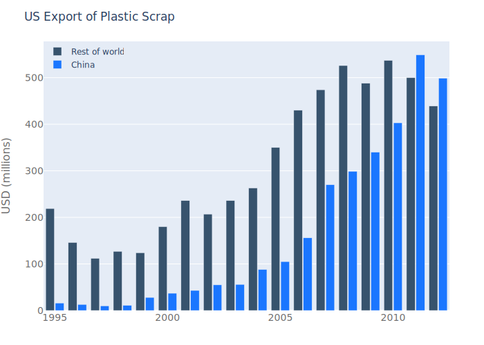
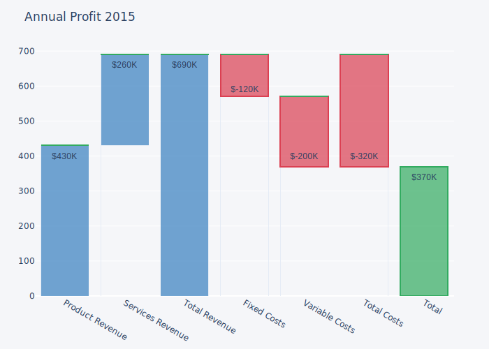

using PlotlyJS
function bar1()
data = bar(;x=["giraffes", "orangutans", "monkeys"],
y=[20, 14, 23])
plot(data)
end
bar1()
function bar2()
trace1 = bar(;x=["giraffes", "orangutans", "monkeys"],
y=[20, 14, 23],
name="SF Zoo")
trace2 = bar(;x=["giraffes", "orangutans", "monkeys"],
y=[12, 18, 29],
name="LA Zoo")
data = [trace1, trace2]
layout = Layout(;barmode="group")
plot(data, layout)
end
bar2()
function bar3()
trace1 = bar(;x=["giraffes", "orangutans", "monkeys"],
y=[20, 14, 23],
name="SF Zoo")
trace2 = bar(x=["giraffes", "orangutans", "monkeys"],
y=[12, 18, 29],
name="LA Zoo")
data = [trace1, trace2]
layout = Layout(;barmode="stack")
plot(data, layout)
end
bar3()
function bar4()
data = bar(;x=["Product A", "Product B", "Product C"],
y=[20, 14, 23],
text=["$(i)% market share" for i in rand(15:30, 3)],
marker=attr(color="rgb(158, 202, 225)", opacity=0.6),
line=attr(color="rgb(8, 48, 107)", width=1.5))
layout = Layout(;title="January 2013 Sales Report")
plot(data, layout)
end
bar4()
function bar5()
x_value = ["Product A", "Product B", "Product C"]
y_value = [20, 14, 23]
data = bar(;x=x_value,
y=y_value,
text=["$(i)% market share" for i in rand(15:30, 3)],
marker=attr(color="rgb(158, 202, 225)", opacity=0.6,
line=attr(color="rgb(8, 48, 107)", width=1.5)))
annotations = []
for i in 1:length(x_value)
result = attr(x=x_value[i],
y=y_value[i],
text=y_value[i],
xanchor="center",
yanchor="bottom",
showarrow=false)
push!(annotations, result)
end
layout = Layout(;title="January 2013 Sales Report",
annotations=annotations)
plot(data, layout)
end
bar5()
function bar6()
trace1 = bar(;x=["Jan", "Feb", "Mar", "Apr", "May", "Jun", "Jul", "Aug",
"Sep", "Oct", "Nov", "Dec"],
y=[20, 14, 25, 16, 18, 22, 19, 15, 12, 16, 14, 17],
name="Primary Product",
marker_color="rgb(49, 130, 189)",
opacity=0.7)
trace2 = bar(;x=["Jan", "Feb", "Mar", "Apr", "May", "Jun", "Jul", "Aug",
"Sep", "Oct", "Nov", "Dec"],
y=[19, 14, 22, 14, 16, 19, 15, 14, 10, 12, 12, 16],
name="Secondary Product",
marker=attr(color="rgb(204, 204, 204)", opacity=0.5))
data = [trace1, trace2]
layout = Layout(;title="2013 Sales Report",
xaxis_tickangle=-45,
barmode="group")
plot(data, layout)
end
bar6()
function bar7()
data = bar(;x=["Feature $(s)" for s in 'A':'E'],
y=[20, 14, 23, 25, 22],
marker_color=["rgba(204, 204, 204, 1)",
"rgba(222, 45, 38, 0.8)",
"rgba(204, 204, 204, 1)",
"rgba(204, 204, 204, 1)",
"rgba(204, 204, 204, 1)"])
layout = Layout(;title="Least Used Feature")
plot(data, layout)
end
bar7()
function bar8()
data = bar(;x=["Liam", "Sophie", "Jacob", "Mia", "William", "Olivia"],
y=[8.0, 8.0, 12.0, 12.0, 13.0, 20.0],
text=["4.17 below the mean", "4.17 below the mean",
"0.17 below the mean", "0.17 below the mean",
"0.83 above the mean", "7.83 above the mean"],
marker_color="rgb(142, 124, 195)")
layout = Layout(;title="Number of Graphs Made this Week",
font_family="Raleway, sans-serif",
showlegend=false,
xaxis_tickangle=-45,
yaxis=attr(zeroline=false, gridwidth=2),
bargap=0.05)
plot(data, layout)
end
bar8()
function bar9()
trace1 = bar(;x=1995:2012,
y=[219, 146, 112, 127, 124, 180, 236, 207, 236, 263, 350,
430, 474, 526, 488, 537, 500, 439],
name="Rest of world",
marker_color="rgb(55, 83, 109)")
trace2 = bar(;x=1995:2012,
y=[16, 13, 10, 11, 28, 37, 43, 55, 56, 88, 105, 156, 270,
299, 340, 403, 549, 499],
name="China",
marker_color="rgb(26, 118, 255)")
data = [trace1, trace2]
layout = Layout(;title="US Export of Plastic Scrap",
xaxis=attr(tickfont_size= 14,
tickfont_color="rgb(107, 107, 107)"),
yaxis=attr(title="USD (millions)",
titlefont=attr(size=16,
color="rgb(107, 107, 107)"),
tickfont=attr(size=14,
color="rgb(107, 107, 107)")),
legend=attr(x=0, y=1.0, bgcolor="rgba(255, 255, 255, 0)",
bordercolor="rgba(255, 255, 255, 0)"),
barmode="group",
bargap=0.15,
bargroupgap=0.1)
plot(data, layout)
end
bar9()
function bar10()
x_data = ["Product Revenue", "Services Revenue", "Total Revenue",
"Fixed Costs", "Variable Costs", "Total Costs", "Total"]
y_data = [400, 660, 660, 590, 400, 400, 340]
textList = ["\$430K", "\$260K", "\$690K", "\$-120K", "\$-200K", "\$-320K",
"\$370K"]
#Base
trace1 = bar(;x=x_data,
y=[0, 430, 0, 570, 370, 370, 0],
marker_color="rgba(1, 1, 1, 0.0)")
#Revenue
trace2 = bar(;x=x_data,
y=[430, 260, 690, 0, 0, 0, 0],
marker_color="rgba(55, 128, 191, 0.7)",
line=attr(color="rgba(55, 128, 191, 1.0)", width=2))
#Cost
trace3 = bar(;x=x_data,
y=[0, 0, 0, 120, 200, 320, 0],
marker=attr(color="rgba(219, 64, 82, 0.7)",
line=attr(color="rgba(219, 64, 82, 1.0)", width=2)))
#Profit
trace4 = bar(;x=x_data,
y=[0, 0, 0, 0, 0, 0, 370],
marker=attr(color="rgba(50, 171, 96, 0.7)",
line=attr(color="rgba(50, 171, 96, 1.0)", width=2)))
data = [trace1, trace2, trace3, trace4]
annotations = []
for i in 1:7
result = attr(x=x_data[i],
y=y_data[i],
text=textList[i],
font=attr(;family="Arial", font_size=14,
font_color="rgba(245, 246, 249, 1)"),
showarrow=false)
push!(annotations, result)
end
layout = Layout(;title="Annual Profit 2015",
barmode="stack",
paper_bgcolor="rgba(245, 246, 249, 1)",
plot_bgcolor="rgba(245, 246, 249, 1)",
width=600,
height=600,
showlegend=false,
xaxis_showtickabels=true,
annotations=annotations)
plot(data, layout)
end
bar10()
function bar11()
trace1 = bar(;x=[1, 2, 3, 4],
y=[1, 4, 9, 16],
name="Trace1")
trace2 = bar(;x=[1, 2, 3, 4],
y=[6, -8, -4.5, 8],
name="Trace2")
trace3 = bar(;x=[1, 2, 3, 4],
y=[-15, -3, 4.5, -8],
name="Trace3")
trace4 = bar(;x=[1, 2, 3, 4],
y=[-1, 3, -3, -4],
name="Trace4")
data = [trace1, trace2, trace3, trace4]
layout = Layout(;xaxis_title="X axis",
yaxis_title="Y axis",
barmode="relative",
title="Relative Barmode")
plot(data, layout)
end
bar11()